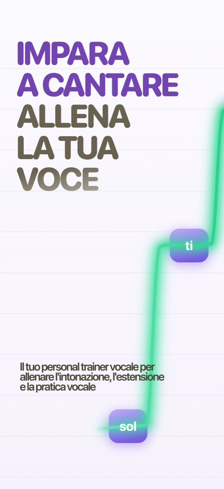
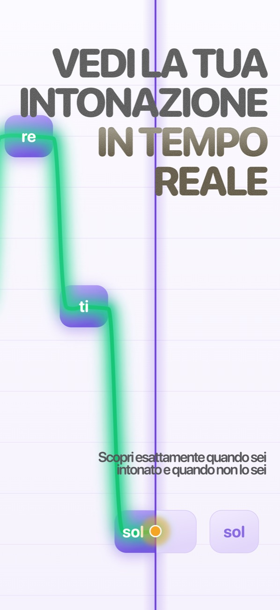
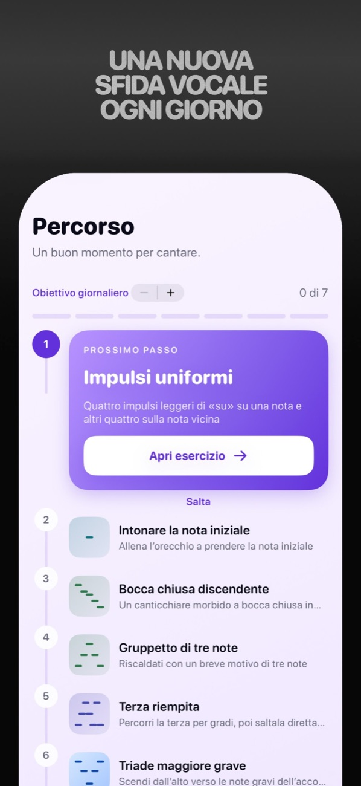
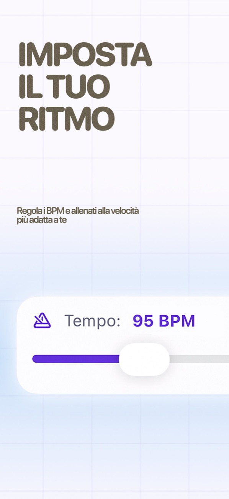

Pratica mirata
Canu isola il passaggio in cui ti blocchi, ti dà alcune note d’ingresso e poi ti fa cantare di nuovo l’esercizio intero.
Canu è il tuo vocal coach personale. Impara a intonare con sicurezza, sviluppa la tua voce e canta con più fiducia. Passo dopo passo.
Canu isola il passaggio in cui ti blocchi, ti dà alcune note d’ingresso e poi ti fa cantare di nuovo l’esercizio intero.
Guarda quale nota stai cantando e con quanta sicurezza la intoni.
Misura la tua estensione vocale dal vivo e scopri il tuo tipo di voce.
Inizia con due riscaldamenti e costruisci una routine con esercizi sempre diversi.
Dopo ogni esercizio, guarda cosa è migliorato e quale passaggio provare dopo.
Componi scale e sequenze di note, scegli note e tempo e salvale. Canu Boogie è incluso come esempio pronto da modificare.
La tua settimana di pratica su un pentagramma, con i minuti di ogni giorno.
Intonazione, allenamento dell’orecchio, agilità, articolazione, controllo del fiato e altro.
Cambia i BPM per rallentare un esercizio difficile o aumentare il tempo poco alla volta.
Scegli l’aspetto che preferisci o lascia che cambi automaticamente.




La tua voce cresce con la pratica.
Descrivi brevemente la tua richiesta. Rispondiamo il prima possibile e usiamo i tuoi dati solo per gestire la richiesta.
Per poterti aiutare: indica dispositivo, versione di iOS, versione dell’app e una breve descrizione del problema. Uno screenshot è spesso utile.
Canu ha bisogno dell’accesso al microfono. Consentilo nelle Impostazioni dell’iPhone, alla voce Canu. Esercitati in una stanza silenziosa e non coprire il microfono.
Canu registra solo se attivi la registrazione. Le registrazioni restano sul tuo dispositivo e puoi eliminarle nell’app. Ascoltare, confrontare, salvare e condividere fanno parte di Canu Pro.
Gli acquisti passano dal tuo ID Apple. Nella schermata Pro di Canu, tocca «Ripristina l’abbonamento». L’abbonamento si gestisce e si disdice nelle impostazioni del tuo ID Apple.
Solo con il tuo consenso: i dati d’uso vanno a Google Analytics, le segnalazioni di errore a Firebase Crashlytics. Si disattivano separatamente nelle impostazioni di Canu, con «Condividi dati d’uso» e «Condividi errori». L’audio non viene trasmesso.
Scegli la regione in cui usi Canu.